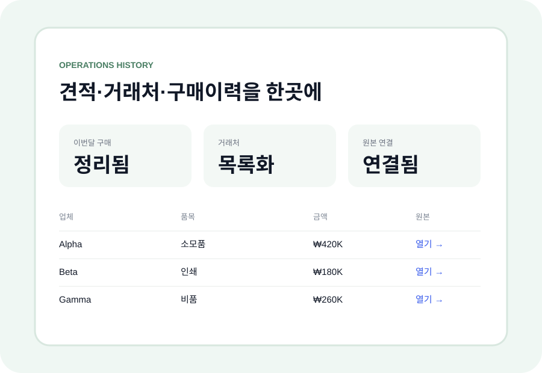

견적 비교 + 구매이력
업체별 견적을 같은 기준으로 정리하고, 과거 구매단가·업체·원본을 함께 확인할 수 있게 만듭니다.
구매요청부터 비교견적, 계약 갱신, 자산 이력까지 한곳에서 확인하고 담당자가 바뀌어도 업무가 이어지도록 정리합니다.
처음부터 큰 시스템을 바꾸지 않습니다 · 가장 반복되는 업무 1개부터 작은 유료 파일럿으로 시작합니다.

회사마다 운영 방식이 다르므로 문제를 미리 단정하지 않고, 현재 쓰는 방식 위에 가장 작은 결과물 하나부터 얹습니다.
업체별 견적을 같은 기준으로 정리하고, 과거 구매단가·업체·원본을 함께 확인할 수 있게 만듭니다.
계약금액·시작/종료일·갱신일·해지 통보기한·원본파일을 한곳에서 확인합니다.
자산번호·사용자·부서·위치·보증·수리·이동·회수 이력을 이어지게 정리합니다.
※ 구조 설명용 예시이며 실제 고객 성과가 아닙니다. 첫 파일럿은 견적 비교표, 계약 관리표, 자산대장 등 작은 범위 하나로 시작합니다.
메일·팩스·개인 파일로 업무를 처리하더라도 최종 기록은 한곳에 모아, 사람이 바뀌어도 회사가 이력을 확인할 수 있게 합니다.
기능을 많이 만드는 것보다, 실제 운영비와 확인시간을 줄이는 데 필요한 정보부터 정리합니다.
동일 품목의 과거 구매단가와 현재 견적을 빠르게 비교해 가격 변화와 협상 포인트를 확인합니다.
종료일뿐 아니라 갱신·해지 통보기한처럼 실제로 움직여야 하는 날짜를 놓치지 않게 합니다.
업체·금액·남은 계약기간·사용자·위치 등 운영정보를 담당자에게 일일이 묻지 않아도 확인할 수 있게 합니다.
비교견적 수행, 계약기한 준수, 자산회수, 처리이력 등 총무·운영의 결과를 나중에 보고와 평가에 활용할 수 있게 남깁니다.
구매이력이 쌓이면 마지막 구매일·수량·단가·주기를 기준으로 재구매 시점과 가격변화를 확인하는 방향으로 확장할 수 있습니다.
실제 반복성이 확인된 뒤 알림·승인·Sheet/Airtable·n8n 등 필요한 자동화만 단계적으로 붙입니다.
기존 인력이 더 많은 업무를 처리할 수 있게 반복 확인·검색·정리를 줄이고, 구매·계약·자산 현황이 담당자 개인 기억에만 남지 않도록 합니다. 추가 채용 대체를 보장하지 않고, 현재 운영의 처리량과 가시성을 높이는 데 집중합니다.
5분 진단으로 시작점을 확인하고, 견적 비교표·계약 관리표·자산대장처럼 실제로 바로 쓸 수 있는 작은 결과물부터 유료로 정리합니다.